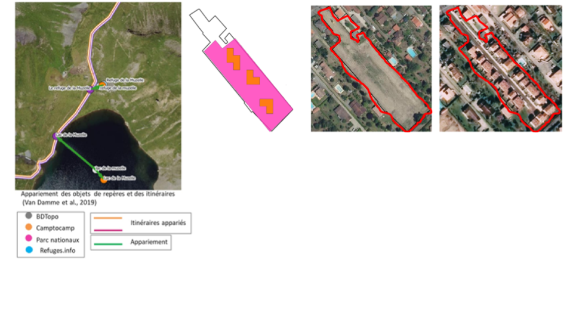
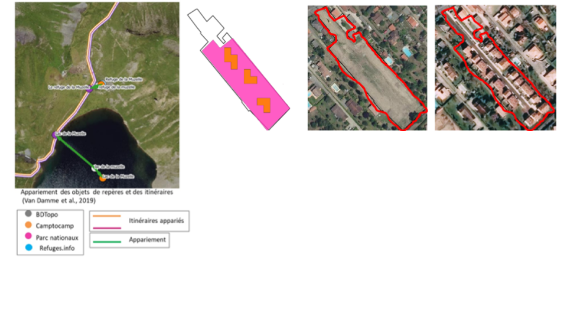

Sciences participatives et information géographique volontaire
Citizen science and Voluntary Geographical Information
 <\center>

<\center>

- animation et analyse des communautés de contributeurs
- saisie participative des données et métadonnées : plateforme Paysages, Infolab
- qualification de l’information géographique volontaire
- intégration de l’information géographique volontaire pour améliorer et mettre à jours des référentiels topographiques
Description des données et utilisation conjointe
Data description and joint use
Extraction d'information, représenation de connaissances et raisonnement, montée en sémantique et enrichissement
Extraction of information, knowledge representation and reasoning, data enrichment
Gestion de la qualité
Management of data quality
Diffusion de la données pour faciliter leur appropriation
Data diffusion to facilitate appropriation